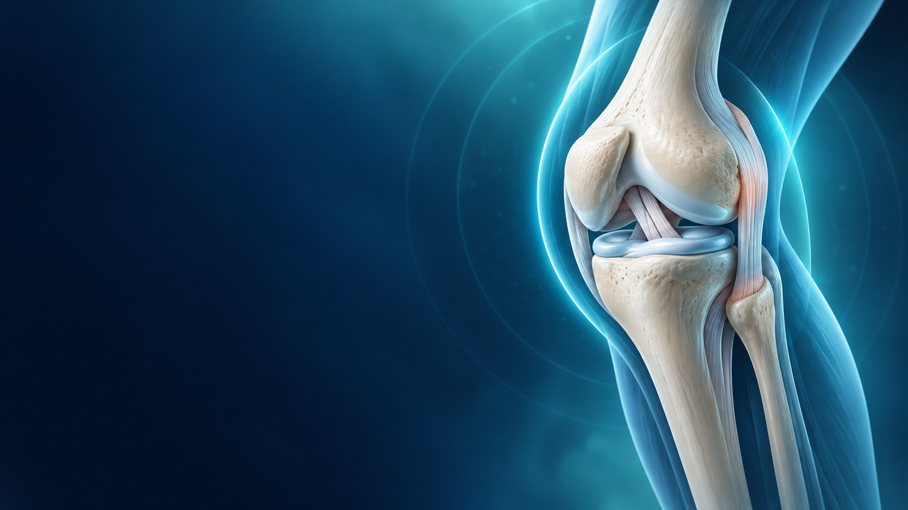

01Lesión principal
Rotura completa del LCA
El ligamento que ayuda a controlar la estabilidad y los giros está desgarrado. Puede sentirse como que la rodilla “cede”.
Qué significaEvitá giros, pivotes y cambios bruscos de dirección.
Traducimos tu resonancia a un plan claro y prudente para proteger la articulación hasta tu evaluación con un especialista.

Signos de rotura completa
La resonancia describe lesiones internas importantes, pero también estructuras conservadas. El tratamiento se decide combinando imágenes, síntomas, estabilidad, edad y objetivos.
El ligamento que ayuda a controlar la estabilidad y los giros está desgarrado. Puede sentirse como que la rodilla “cede”.
Hay una lesión oblicua en su cuerno posterior. Puede generar dolor, chasquidos o sensación de bloqueo.
El menisco se desplaza hacia la región posterior. Su importancia clínica debe correlacionarse con el examen físico.
La parte posterior del platillo tibial externo muestra una lesión compatible con impacto traumático.
Ligamento cruzado posterior y colaterales · Tendones rotuliano y cuadricipital · Rótula y cartílagos articulares
Estas medidas pueden ayudar a controlar dolor e inflamación mientras coordinás la consulta. Si tu profesional ya te indicó algo diferente, seguí esa indicación.
Reducí las actividades que disparan dolor o inestabilidad. No pruebes la rodilla con giros para “ver cómo está”.
Aplicá frío envuelto en tela durante 15–20 minutos, cada 2–3 horas. Nunca directamente sobre la piel.
Una venda elástica puede ayudar con la inflamación. Aflojala si aparece hormigueo, frío o cambio de color.
Al descansar, elevá la pierna con almohadas para ayudar a bajar la hinchazón.
Si la rodilla cede o duele al apoyar, reducí la carga y consultá si necesitás muletas o una rodillera indicada y ajustada por un profesional.
Anotá dolor (0–10), hinchazón, bloqueos y episodios de inestabilidad. Esa información mejora la consulta.
La rehabilitación es parte central del tratamiento, pero los ejercicios deben adaptarse tras evaluar estabilidad, movilidad y meniscos.
Importante: el hielo, la compresión o las ayudas para caminar no reemplazan la evaluación. No uses una rodillera o muletas sin aprender el ajuste correcto.
Buscá atención médica urgente si aparece cualquiera de estos signos, especialmente si empeoran.
Hacer chequeo de síntomas →O no podés dar algunos pasos por dolor intenso.
↗No podés estirarla o flexionarla con normalidad.
↗Especialmente si es marcada, repentina o progresiva.
↗Puede indicar una complicación que requiere evaluación.
↗Incluye hormigueo o cambios de color.
↗Marcá lo que sentís. Esto no diagnostica: te ayuda a decidir si conviene buscar atención urgente.
Solicitá una evaluación pronta y llevá las imágenes de la resonancia, no sólo el informe.
La cirugía no se decide sólo por la resonancia: influyen la inestabilidad, actividad, lesiones asociadas y objetivos personales.